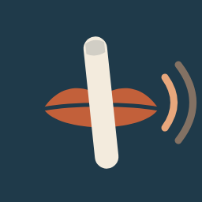

Última actualización: 26 de octubre de 2026
PSSTH! convierte documentos (PDF, imágenes, texto, EPUB) en lectura en voz alta en tu dispositivo.
La voz natural y la transcripción con Whisper necesitan modelos que no vienen dentro de la app. Si eliges instalarlos, PSSTH! los descarga desde GitHub (github.com). En esa descarga GitHub recibe, como en cualquier conexión, tu dirección IP; PSSTH! no le envía ningún otro dato tuyo. Puedes borrar los modelos en «Voces y modelos».
Está desactivada por defecto. Si la activas y escribes la dirección de un servidor Ollama (por ejemplo, tu propio ordenador en la red de tu casa u oficina), PSSTH! envía a esa dirección el texto de los documentos que abres para corregir errores y recibe el texto corregido. PSSTH! no elige, opera ni recibe datos de ese servidor: el texto va solo a la dirección que tú escribes, y lo que ocurra allí depende de quien lo administre. La conexión usa http sin cifrar, así que úsala solo dentro de una red de confianza. Puedes desactivarla en cualquier momento.
El OCR y la síntesis de voz usan las capacidades del sistema operativo de tu dispositivo (Apple Vision y las voces del sistema en iOS). Según la configuración del sistema, algunas voces pueden descargarse de Apple; PSSTH! no participa en esa transferencia.
Al eliminar un documento de la biblioteca se borran su copia local, el texto reconocido, la grabación asociada (si la hay), el progreso y los marcadores. Al desinstalar la aplicación se eliminan todos sus datos.
dantecartagenacorrea@gmail.com
Para cualquier consulta sobre PSSTH! escribe a dantecartagenacorrea@gmail.com.
PSSTH! es una herramienta que funciona en tu dispositivo: no aloja, revisa ni publica lo que abres o grabas.
Eres responsable de tener derecho a usar los documentos, imágenes y audios que abres en PSSTH!. La app los procesa solo en tu dispositivo y para tu uso personal; el desarrollador no los recibe, no los guarda y no los comparte.
Si grabas a otras personas, obtén su consentimiento cuando la ley lo exija. Las grabaciones quedan en tu dispositivo.
El reconocimiento de texto, la transcripción y la voz pueden contener errores; consulta el documento original para cualquier uso formal. PSSTH! se ofrece tal cual, sin garantías, en la medida en que lo permita la ley aplicable.
PSSTH! usa software de código abierto. Las voces naturales y la transcripción opcionales usan los modelos Kokoro-82M (Apache 2.0) y Whisper (MIT) a través de sherpa-onnx. Las licencias completas están en la app, en «Acerca de».